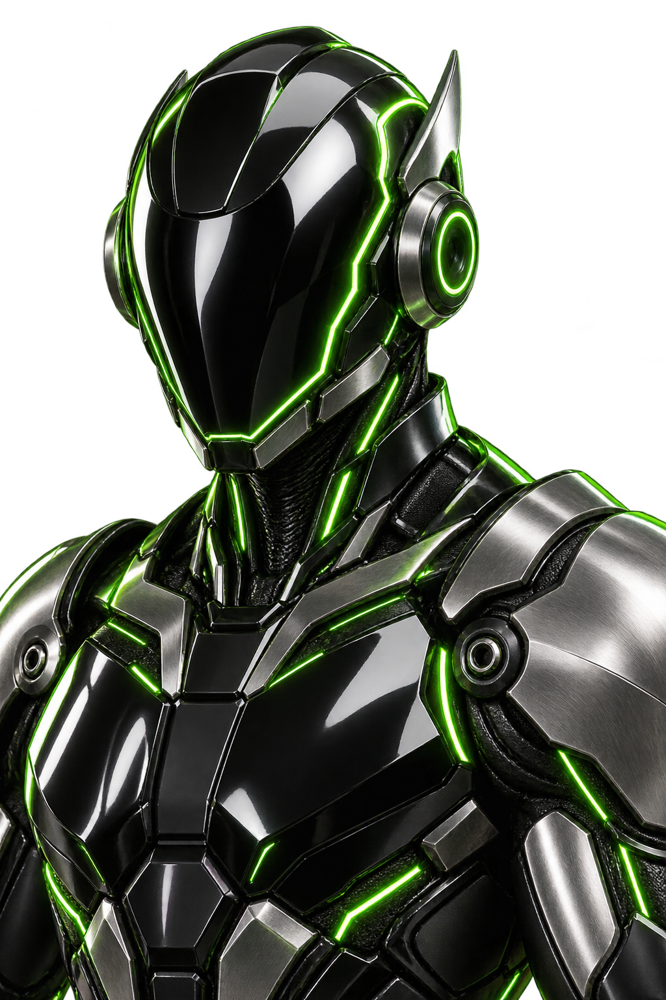
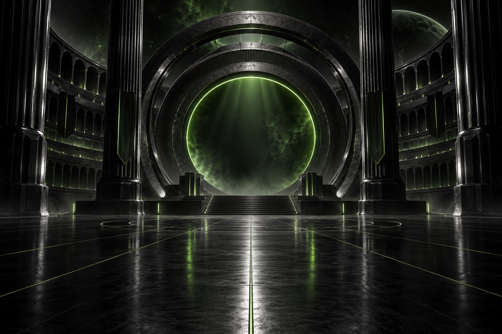
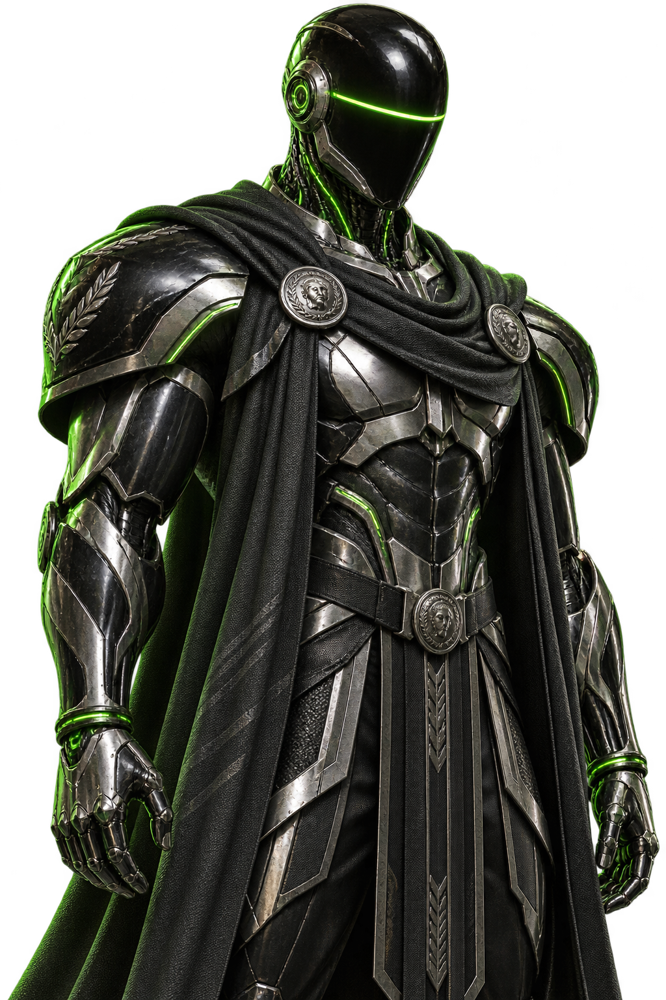
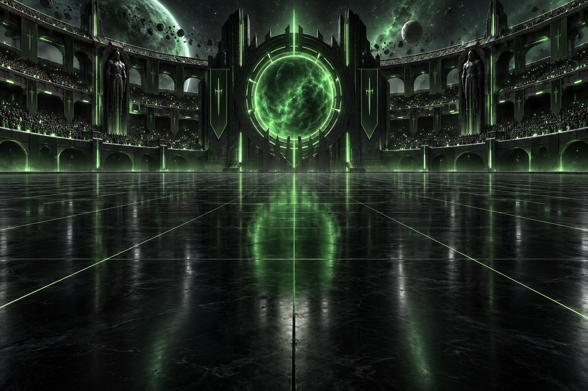
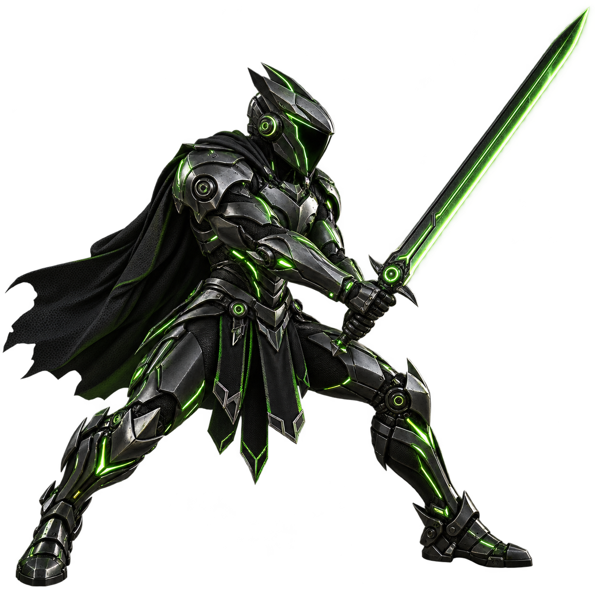
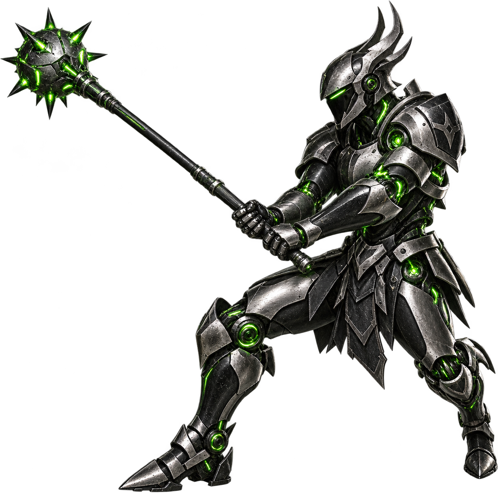
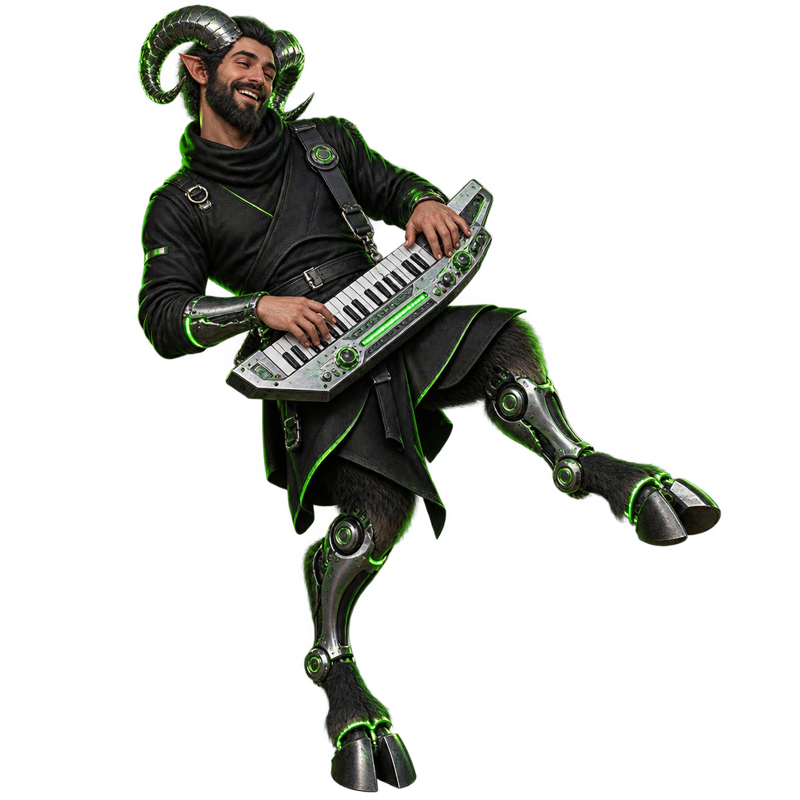
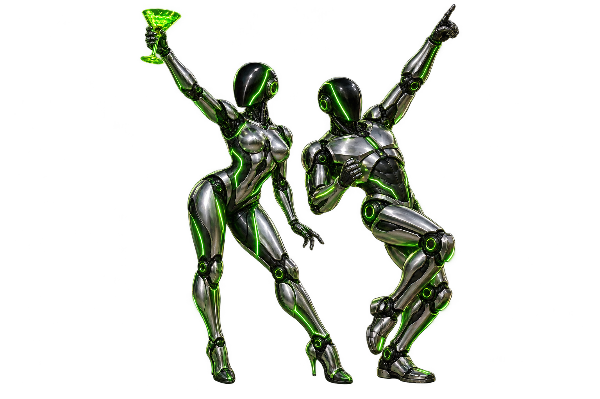
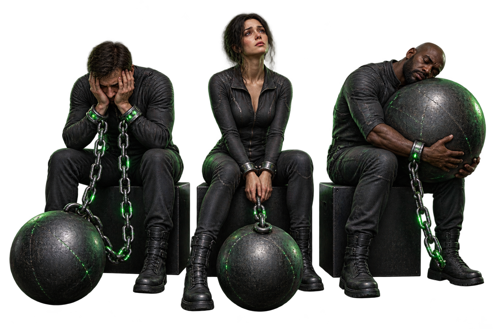

01 / DEFINESpeculator
Turns your brief into specifications and tasks. The one who asks what “just a small change” actually means.
BRIEF → SPECIFICATIONS

A private command deck for your AI coding team. Your agents. Your rules. Your Arena.
See what’s ready01 / Welcome to the new Colosseum
An Arena is your project. A Tabula is its board. The plan: let specialized agents argue over the implementation while you reclaim a little of your life.
BREAD. CIRCUITS. BETTER COMMITS.


ARENA / 001 SCROLL TO ENGAGE02 / Assemble your team
Save agents and models, then assign your roles. A Speculator can use one runtime; an Implementor can use another. No personality test required.

01 / DEFINETurns your brief into specifications and tasks. The one who asks what “just a small change” actually means.
BRIEF → SPECIFICATIONSWrites the code. Planned to work in its own isolated checkout, away from your carefully arranged chaos.
SPECIFICATIONS → CODEJudges the result against the spec. Planned independent review. “It worked in my context window” is not a verdict.
EVIDENCE → VERDICTThe coordinator / planned orchestration
Keeps the battle moving. Routes review comments back to Speculator. Cannot overrule a failed independent review. Even the referee has rules.
03 / From intent to outcome
Ten-minute setup is the goal, with compatible local runtimes and accounts ready. Autonomous execution is still being built.
Choose an agent. Authorize it. Select models. Save.
Assign your team. Create an Arena and Tabula. Describe the work.
Bound the permissions. Let the team work. Follow the evidence.
Define the victory condition.
One clear task. No prophecy.
Make the thing do the thing.
Evidence, please.
Earn the laurel.
Not a product screenshot. This board illustrates the intended autonomous workflow.
Intermission / Pan has entered the chat
The robots have discovered cocktails, synths, and questionable dance moves. Pan is delighted. The Emperor would like someone to finish the backlog.
SATIRE / NOT A FEATURE REQUEST


04 / Development status
Cuckoding is in active development. The source and local build instructions are available. This is not a signed or notarized public release.
Implemented in source
Detection does not authorize an agent. A model catalog does not prove model access. Real-account acceptance remains open.
Still on the roadmap
Cursor task inference is not enabled. Start battle is not available yet. Follow the checklist for the actual boundary.
A warning from the cheap seats
Give the machines every task, every dance, every ridiculous little pleasure — and eventually all that’s left is watching them have a life.
